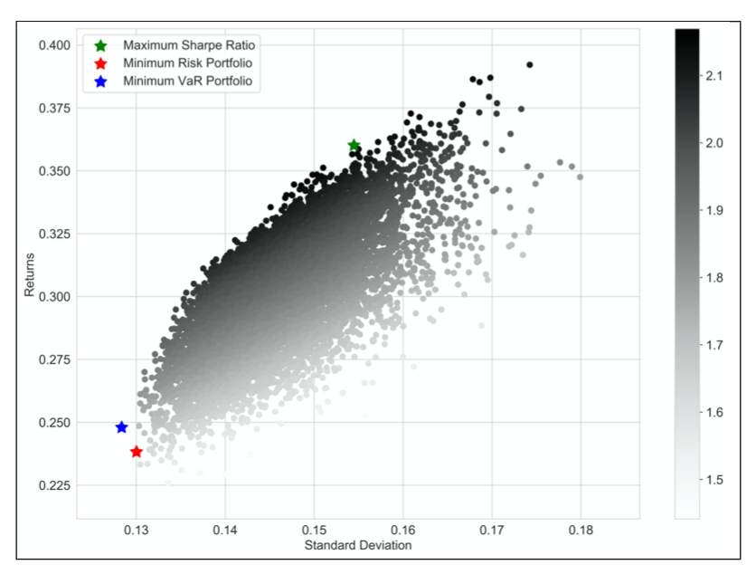
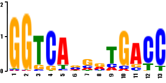
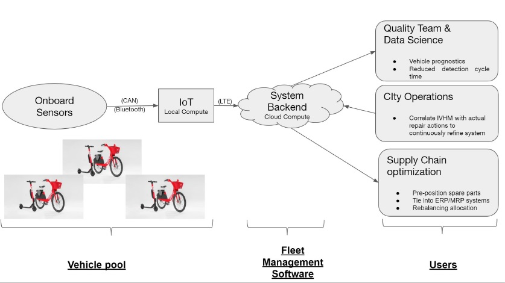
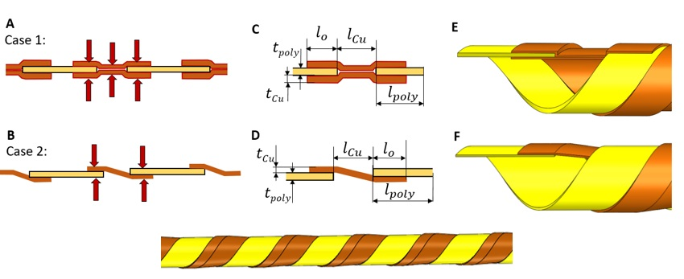
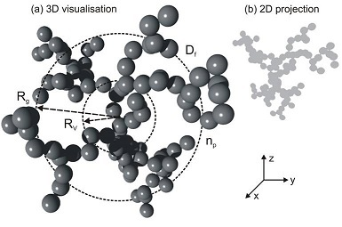
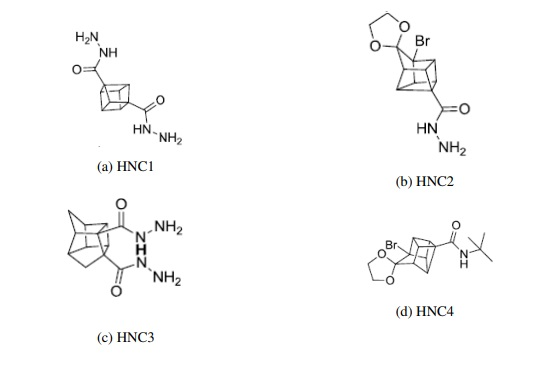
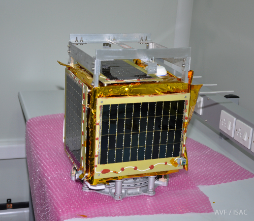

University of Illinois Urbana-Champaign
- 2023 Master of Computer Science
- 2020 Master of Science in Mechanical Engineering
Research infrastructure · Quantitative research
I build scalable research infrastructure and production-ready data systems for quantitative work. My work also spans statistical modeling, portfolio construction, risk, optimization, applied machine learning, and time-series analysis.
I am currently at Forest Creek Capital, where I have worked since 2020. My broader experience spans scientific computing, production engineering, applied data analysis, and research-led problem solving.
About
My work centers on the computing and data infrastructure that makes quantitative research reliable and repeatable. I also work with statistical and machine-learning methods that are operationally realistic and clear about their assumptions and limitations.
I believe simplicity is a powerful tool for solving hard problems.
Experience
I build and operate automated trading systems and quantitative research and production infrastructure for energy markets. My work includes Python research tooling, portfolio construction, pricing and risk models, and cloud-native systems on Google Cloud Platform using BigQuery, Airflow Composer, Kubernetes, and virtual machines. I also contribute to long-running software modernization and backup and disaster-recovery practices, and I have directly managed a team of four analysts. Details of this work are confidential.
Education
Earlier work
These historical academic and engineering projects show the breadth of the work that shaped my current approach. They are presented in their original context and are not descriptions of my current professional work.

Academic project · Quantitative methods
We explored portfolio construction using S&P 500 data from 2013 to 2018, with an emphasis on the relationship between expected return and risk. Historical performance was used as an illustrative input rather than a guarantee of future results. The linked image shows the simulated risk-return profile, and the framework can be extended to additional asset classes.

Academic project · Statistical inference
This was my first project in bioinformatics. We investigated how information can be extracted from biopolymer sequence data using the expectation-maximization algorithm. Our implementation was informed by research published in the 1990s; the image is a sequence logo generated from an example probability weight matrix.

Historical internship · Software and data systems
My internship projects spanned embedded software, automated testing, data analysis, and business modeling for micromobility systems. I wrote C++ for embedded Linux and IoT devices, used Python to automate testing on physical vehicles, and applied Python and SQL to study GPS service performance and maintenance operations.

Research project · Design and manufacturing
We developed a lightweight heat exchanger using polymers and metals, along with a roll-to-roll manufacturing process for forming helical structures from materials thinner than 200 µm. The design targeted low-temperature flue-gas conditions near 150°C. Related work also examined anti-fouling coatings and physics-based machine-learning methods for maintenance.

Research internship · High-performance computing
I used high-performance computing simulations to generate fractal particle clusters and study how their aggregation behavior changed as physical parameters varied.

Undergraduate thesis · Computational chemistry
I used NASA CEA and Gaussian 09 to simulate chemical reactions and estimate thermal properties for candidate rocket propellants. The simulations were grounded in ab initio quantum-chemistry methods.
Undergraduate project · Scientific computing
We wrote a C++ implementation of particle image velocimetry, a non-invasive flow-measurement technique used in research and industry. The linked results show velocity fields produced by our program.

Student satellite · Structural analysis
Pratham was a student-developed CubeSat built with mentorship from ISRO and launched into low Earth orbit on September 26, 2016. My role was limited and specific: I used ANSYS to help verify the satellite's structural integrity.
Academic research
During my graduate studies at UIUC, I worked on multidisciplinary problems spanning heat-transfer systems, advanced manufacturing, and machine-learning-based prediction. This historical record demonstrates my ability to work through technically complex research problems. Since graduating from UIUC, my work has been industry-focused rather than public-facing research.
Additional background
Brief context beyond my primary professional and academic record.
I enjoy badminton, novels, and television. Favorite authors include Satyajit Ray, Brandon Sanderson, Ayn Rand, and Jeffrey Archer.
At IIT Bombay, I led a hostel team that built a Rube Goldberg machine with limited resources; it won first prize in a collegiate competition.
{kind=link}
{kind=link}
{kind=link}
{kind=link}
{kind=link}
{kind=link}
{kind=link}
{kind=link}
{kind=link}
{kind=link}
{kind=link}
{kind=link}